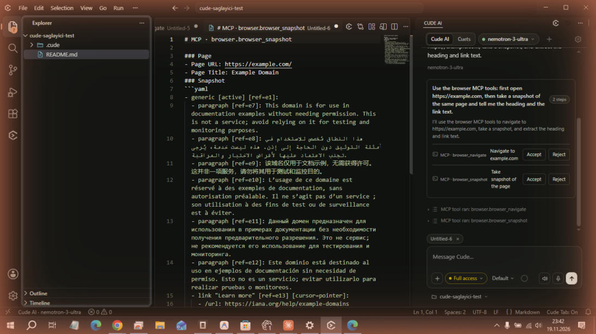

Project-aware chat
Reads your files and project rules; in Auto mode it writes changes straight into your folders, with one-click undo.
Connect the model provider you already use, hand bigger jobs to a team of agents, and let the agent drive your browser and tools. Every action waits for your approval.

A full Code-OSS editor with an AI panel that understands your project, writes files directly and keeps an undo for every change.
Reads your files and project rules; in Auto mode it writes changes straight into your folders, with one-click undo.
A planner, parallel workers and a reviewer split a big task, track it round by round and stop when the project checks pass.
Through MCP the agent opens pages, clicks, types and takes snapshots in one live session, only after you approve each call.
Cloud providers and any OpenAI-compatible endpoint, plus Hugging Face GGUF models downloaded and run on your PC with llama.cpp.
Dictate with the microphone and hear answers in the Windows voice for your language. No extra installs.
Keys live in OS secure storage; commands, tool calls and full access always ask first.
Pick a provider, paste a key and Cude lists the models and their reasoning levels. Streaming, retries and clear error messages are built in.
Cuets breaks a request into a checklist, runs workers in parallel and verifies the result with your own test command before calling it done.
One installer. It installs into your user folder, so no administrator rights are needed.
Windows 10 or 11 (64-bit) · 4 GB RAM or more
SHA-256 C76F9E2F626EE62E9C0C41E7C58C4BAFE90F871562BC6BE19990143B59A6BF8AGet-FileHash .\CudeIDE-Setup-0.1.0-x64.exe
Yes. You pay only your model provider for usage on your own key; local models and local agents use their own resources.
In the Windows secure credential storage through the editor's secret storage. They are never written into project files or sent anywhere except the provider you chose.
In Auto mode it writes file edits and keeps an undo. Terminal commands, MCP tool calls and starting tool processes always ask first; Read-only and Plan modes never write.
The 0.1.0 installer is not code-signed yet, so SmartScreen may warn on first launch. You can confirm the file is intact with the SHA-256 value above.
Cude IDE is built on the open-source Code-OSS editor (via VSCodium) with Cude's own AI extension, theme and settings. The MIT license and third-party notices ship with the app.
Version 0.1.0 is Windows x64 only. Other platforms are planned.